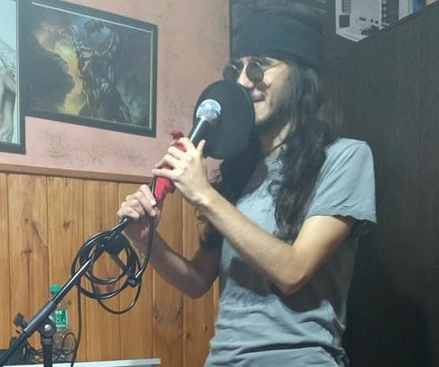
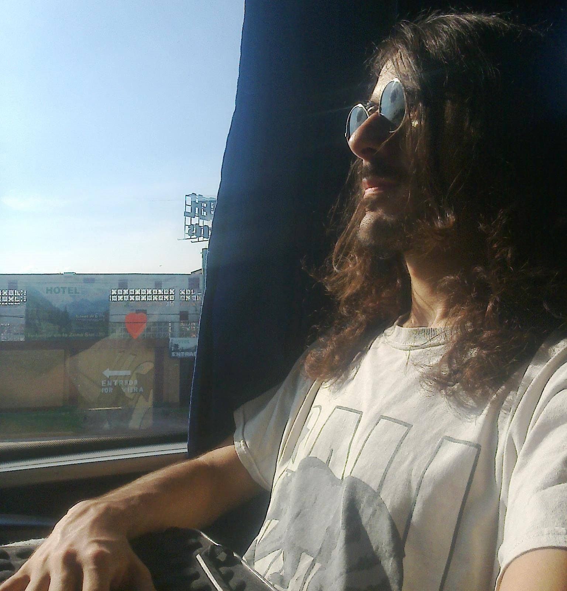
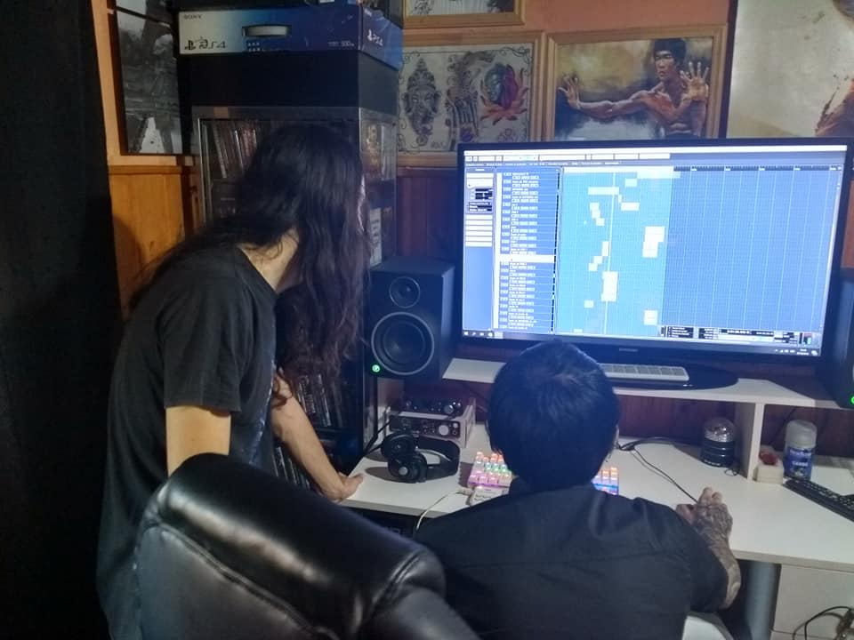

Imagination

What is the real difference between a man with the strength to recover through love and a man who simply clings to obsession? The second song I wrote eight years ago for my band, "Ssendas," confronts me with this very question.
In this article, I want to untangle the spirit embedded within the music, while also recounting the "unfortunate series of events" during a journey to the Argentine interior that served as the song's origin. First and foremost, as is my duty, I present the track below. Please select the Japanese subtitles to follow along.
It was many years ago. At the time, I was studying remotely at a university, but I was required to attend in person only for exams. Traveling to the university was never a comfortable experience. It was located in a different province (Santa Fe), which, in the vast territory of Argentina, was about 500 kilometers away from where I lived.
I had to take cheap long-distance buses at the terminal and endure a 12-hour journey. The quality of the seats was abysmal; by the time I reached my destination, my entire body ached as if I had been dragged out of a time capsule.
At the university, I was known as "Professor Iki." I had written textbooks and tutorials for new students and helped them personally, so I commanded a certain level of respect. Among one of these groups of new students was a woman who admired me. I find myself drawn to her as a person.
It didn't take long for us to hit it off. We shared a mutual interest and began collaborating on several projects. Everything seemed to be going so smoothly it felt unreal. And that intuition turned out to be correct. One day, she confessed her feelings to me. However, she revealed that she had also been involved with another man since before she met me, and she was attracted to him as well. She was agonizing over the situation, having to choose one and hurt the other.
That man also learned of my existence and threatened me, demanding that I step aside. I did the exact opposite, deciding to move even closer to her. I believed that meeting her in person was the key to decisively tipping the scales in my favor. Since the province where she lived was far away and airfare or bus tickets were extremely expensive, I spent a month saving up for the travel costs. On the day, gripped by intense nervousness, I boarded the bus and set off to see her.

The journey was interminably long. Her home was in a town even further than the university, forcing me to endure an additional two-hour bus ride. I arrived near 6:00 in the morning. I knew where she worked, but her shift didn't start until 10:00. I still had four hours to go. Between the anxiety and writing the letter I wanted to hand-deliver, I hadn't slept a wink in nearly two full days.
The streets were silent, with not a soul in sight, yet the summer sun was already brilliantly illuminating the green of the trees at that early hour. I find a tree in a plaza, threw down my backpack, and lay down. The breeze was cold, enough that I had to cover myself with my jacket.
However, in small towns like this, far from the capital, residents know each other inside out and remain wary of strangers. Before I knew it, I felt the gazes of passing neighbors and workers, making sleep impossible. I could do nothing but rest my body for a brief while. This wasn't the first time I had spent the night in a plaza. A year prior, I had experienced the same in Santa Fe. My roommate at the time had fallen behind on the rent, leaving me with no choice but to sleep in a square under a pleasant light rain.
The moment finally came. I was able to see her before she started work. Her shift was only two hours, so I waited outside. Afterward, we shared some laughs and had a pleasant time. However, at a certain point, her energy faded, and she seemed to stop listening to me. Even when I suggested going somewhere, she wasn't interested, nor did she offer any suggestions of her own. She just stared at her smartphone screen, over and over again.
Then, she confessed the fact I had secretly feared. A week earlier, that man had driven to see her, and they had started dating. I couldn't believe it. I tried to persuade her to give me a chance, but it was already too late. It was as if she had completely forgotten about me.
The afternoon passed with her lacking the energy to do anything but stare incessantly at her messages, and I eventually set off on my way home. As we parted, I handed her a letter. These were the words written inside:
Are you made of me, and am I made of you...
Or is it merely an imagination?
Were angels and heaven created...
Or are they merely an imagination?
Your virtues, your flaws, your very way of being—
To me, they are art.
Though I know not where I am going or where I am,
I am certain that my place is by your side.
As time flows,
You will return to these words once again.
You will know they are the truth within my soul.
As time flows,
You will return to these words once again.
Because it was you who was my destiny.
At the time, I firmly believed that in a few years, she would be by my side, and we would read this article together as a memory of our relationship. But that day never came... She had fallen in love with my "talent," not with me as a human being.
Two years later, I was with my band, "Ssendas." We needed a second track for the album, and I looked back through my notebooks where I had jotted down my thoughts and ideas. There it was—the answer to the equation: the draft of that letter. At the time, I was still carrying the wound, "waiting" with a faint, almost extinguished hope that she would change her mind. That was exactly why I became intrigued by the idea of turning that agony on its head and sealing it forever within a song. When I presented it to the members, it was well-received, and we began production.

Here are fragments excerpted from my diary at the time.
"August 7, 2017
Initially, it was supposed to be a ballad centered around arpeggios. However, the structure felt too rigid. While I was composing the drums on the computer, the clean chords transformed into distortion, and I pushed the tempo abruptly from 120 to 145 BPM. The melody shifted into something overwhelming, and perfect metal was born. The recording took several hours. In the final take, just as my voice was reaching its limit, I let out a high-pitched scream at the end of the first verse. The moment Matías and I heard it, we knew that scream was exactly what was needed. To fit this new sonic violence, the words from the letter were shaved down and mutated."
In truth, the song wasn't that complex. Once I found the entrance, the rest of the parts were already taking shape. With the completion of the second track, I gained a deeper understanding of what a band is and our capabilities as a group. For instance, I realized that our guitarist, Cristian, excelled at improvisation and never missed a note during solos, yet he lacked the structural ability to build a song from scratch.
On the other hand, there was our manager, Matías. Having graduated from a classical music conservatory, it was easy to engage in musical dialogue and understand each other. However, at times, I felt his role in the rehearsal room was a bit excessive. The dynamic was essentially me handling the composition, editing, drum construction, final arrangement, and vocals, while Matías provided advice. Even so, we believed that outside the rehearsal room, he was doing excellent work as a manager—promoting the band, approaching record labels, and building connections.
While the lyrics speak for themselves, I want to highlight a few specific parts and contrast them with my current perspective, matured by the passing years.
Are you made of me, and am I made of you... Or is it merely an imagination?
The opening speaks of "essence." It describes a situation as if two people were existing solely for each other. Naturally, at the same time, the protagonist questions whether this intuition of mutual love is correct or if he is merely seeing a substanceless phantom.
Were angels and heaven created... Or are they merely an imagination?
Here, the previous concept is repeated while being compared to the divine. It is close to a kind of "Messiah Complex."
Your virtues, your flaws, your very way of being—To me, they are art.
The protagonist is fascinated by that person. However, in a sense, he is saying nothing new. After all, doesn't everyone possess virtues and flaws that could be considered art? Just as Charles Bukowski spoke of the "art of hatred" held by the majority of society in his work The Genius of the Crowd, this protagonist is also nothing more than an "artist of obsession."
Though I know not where I am going or where I am, I am certain that my place by your side.
At the time, I was likely in a state of self-loss. In truth, much of my life has been a continuous search, and it likely always will be. Back then, I tried to mask that search for existence with the blindness of "love"—a perfect excuse to ignore the fact that there were no answers. Love as the ultimate faith.
As time flows, you will return to these words once again. You will know they are the truth within my soul.
Here lies the innocence (or foolishness) of the protagonist. He believes that years later, she will read this letter again, think of him, and realize he still thinks of her. He doesn't doubt for a second that this will happen... acting so wise, yet being so naive.
As time flows, you will return to these words once again. Because it was you who was my destiny.
This conclusion condenses everything. The man doesn't just believe she is his destiny; he has convinced himself that he is hers as well. In other words, he was arrogant enough to believe he understood—or could even assign—the fate of another. This is the pinnacle of obsession.
From my current perspective, I cannot help but be critical. Yet, I cannot blame myself either. Haven't we all, to some extent, held onto illusions and fought windmills like Don Quixote? My greatest battle was against my own arrogance. Even after the storm had passed, I remained there, waiting for something that didn't exist, fighting alone against a phantom of my own creation. However, from within those agonies, art was born, and something worthy of existing was given life. That, in the end, was my true destiny.